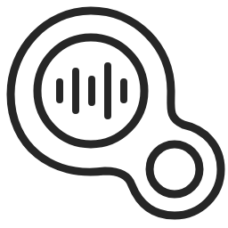

録音・補正中は設定を変更できません。
文字の入力方法
貼り付けを押した後、入力したい位置をクリックしてください。
起動
履歴の保存
MCP接続 開発中
ファイル文字起こし、辞書・表記置換の編集、履歴の確認ができます。マイク録音やリアルタイム入力は操作できません。
接続先アプリ
ローカルモデル
キーはこのWindowsユーザー向けに暗号化して保存します。設定の書き出しや画面への再表示はしません。キーの登録後、上の選択欄で使用するAIを切り替えてください。

アプリ情報